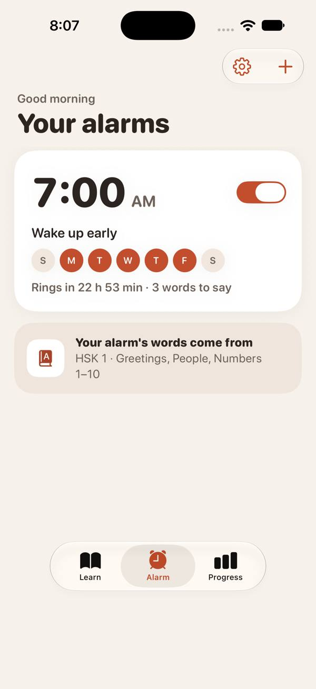
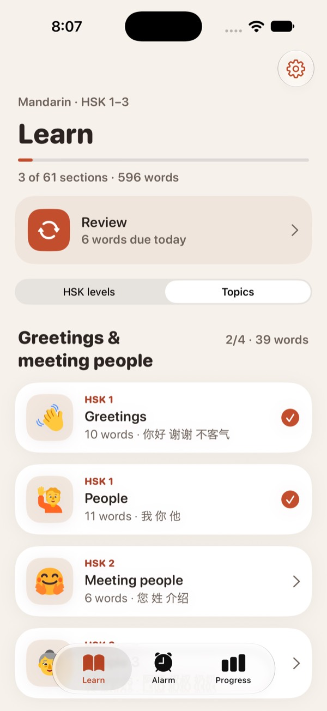
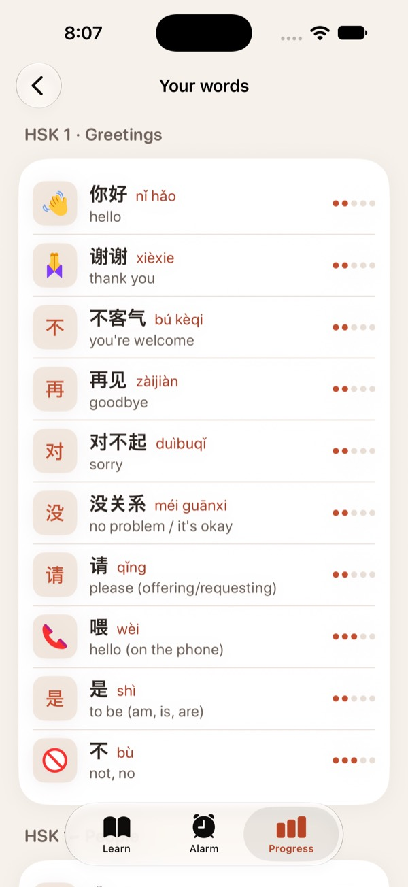
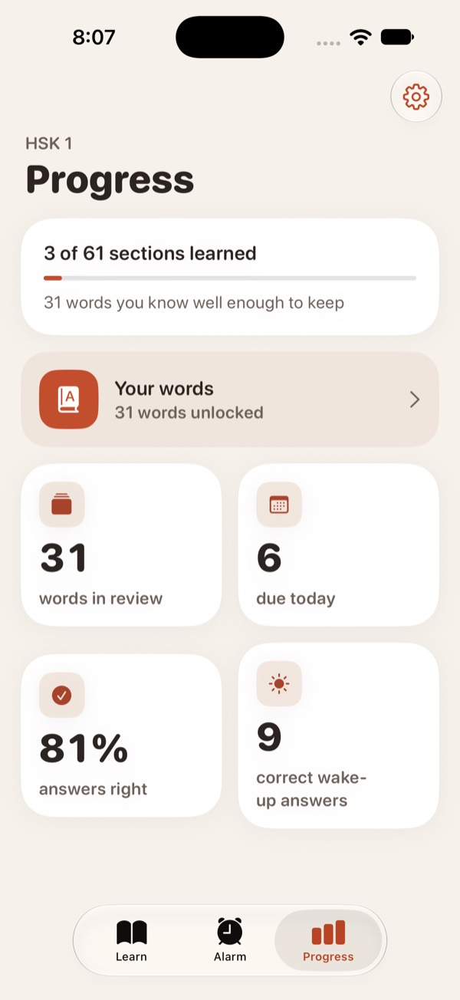

Mingo is an iPhone alarm for Mandarin learners. You study a few words during the day. In the morning, the alarm keeps ringing until you recall them.

Flashcards with characters, pinyin, meaning, a picture and audio. An optional quiz after.
Pick a time and days. The alarm only draws from words you have already studied.
Through Silent and Focus, even if the app was closed. Tap Speak to open the challenge.
Characters only, no pinyin. A wrong answer swaps in a new word. Stop only snoozes it.
Captured from the iOS app running with a demo account: three HSK 1 sections learned and six words due today.



Each row is a finding from the Discovery Report and the feature it led to.
| Finding | What we built |
|---|---|
| Learners practice daily but stay stuck at basics14 of 33 Duolingo complaints (42%) tagged on Trustpilot | The alarm tests recall, not recognition. Challenges show characters only, because pinyin gives the answer away. Tones count. |
| 57% of people snooze most morningsNotre Dame, SLEEP study | Stop does not end it: re-rings continue until the challenge is passed, and the app's own alarm sound plays during the challenge. |
| Older alarm apps only worked if left openApp Store reviews; AlarmKit shipped Sep 2025 | Built on AlarmKit. Tested ringing on Silent, in Focus, when locked and after force-quit. |
| On-device speech is free and accurateSpeechAnalyzer, iOS 26 | Speech runs on the phone. No paid voice API, so no per-use cost and no voice uploaded. |
| Speaking alarms misheard correct answersMath Alarm Clock review, 2016 | A forgiving pinyin matcher (homophones pass), plus a tap quiz after two missed speaking prompts so nobody gets stuck. |
| People who moved abroad need everyday wordsSecond customer segment | A Topics view (food, shopping, family, travel…) alongside HSK levels. |
| Base case priced at $4.99 / monthMarket sizing, $59.88 / yr | Free tier with the full alarm. Pro adds spaced repetition and every pack. No ads on the alarm. |
| On a real iPhone (iOS 26.6) | Result |
|---|---|
| Alarm rings with the phone locked | Pass |
| Rings on Silent and in a Focus mode | Pass |
| Rings after the app is force-quit | Pass |
| Speak opens the challenge; Stop schedules a re-ring | Pass |
| Mandarin speech model available on the phone | Pass zh-CN installed |
| Recognizer accuracy on one-syllable words | Problem found shuì (水) heard as duì (对) |
Single-syllable speech is unreliable. The matcher was correct, but the recognizer guessed a more common word. Tap challenges (meaning, picture match, match pairs) cover these words, and speaking prompts will move to two-syllable words like 喝水.
Not measured yet: wake-up pass rates with real users over several mornings, and whether learners keep the alarm on after a week.
Log every wake-up answer and export it as a CSV, to measure pass rates and false rejects.
Two-syllable words, hints to the recognizer, and checking its alternative guesses against the target.
4,396 more words, plus scenario phrases for people living abroad.
Payments, Sign in with Apple and a paid developer account.